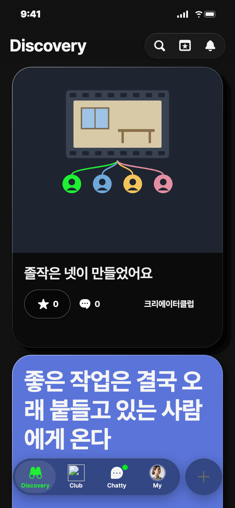
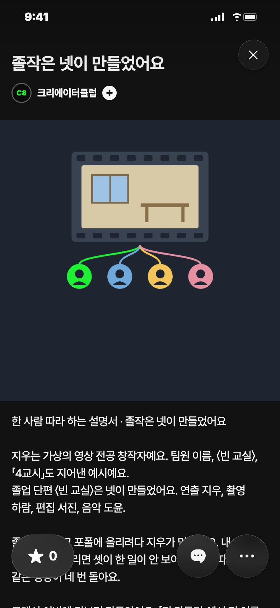
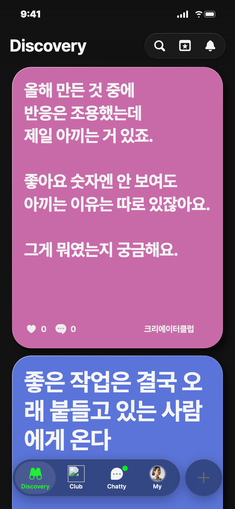
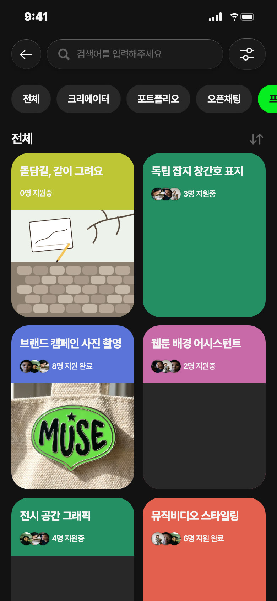
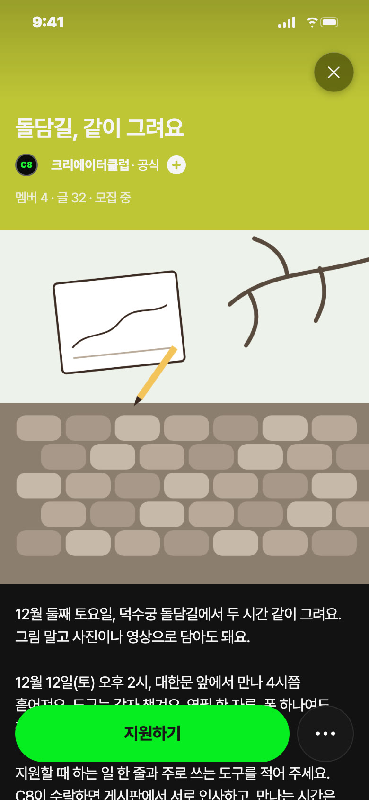

C8 앱 게시 시안 · 2026. 11. 24. 화요일 · 오늘 추천 포트폴리오
오늘 추천 · 포트폴리오 · 오늘 낮 12시


왜 오늘: 화요일 설명서 다음 편 — 졸전 끝나고 팀 작업 올릴 때, 팀 포트폴리오 기능 하나.
보낼 사람: 졸작 팀 단톡방에 「이거 팀으로 올리자」
받고 싶은 댓글: 예시·가상: 저희 졸작 팀도 방금 만들었어요. 사운드 한 친구가 제일 좋아해요.
확인 범위: iOS 코드·서버 시험·자주 묻는 질문 원고 3-5. 실기기 화면은 나나 확인 전.
제목
졸작은 넷이 만들었어요
설명
한 사람 따라 하는 설명서 · 졸작은 넷이 만들었어요 지우는 가상의 영상 전공 창작자예요. 팀원 이름, 〈빈 교실〉, 「4교시」도 지어낸 예시예요. 졸업 단편 〈빈 교실〉은 넷이 만들었어요. 연출 지우, 촬영 하람, 편집 서진, 음악 도윤. 졸전이 끝나고 포폴에 올리려다 지우가 멈췄어요. 내 프로필에만 올리면 셋이 한 일이 안 보이고, 넷이 따로 올리면 같은 영상이 네 번 돌아요. 그래서 이번엔 팀부터 만들었어요. 「팀 만들기」에서 팀 이름 「4교시」와 한 줄 슬로건을 넣고, 셋을 활동명으로 찾아 초대했어요. 팀을 만들면 팀 프로필과 팀원끼리 쓰는 채팅방이 같이 생겨요. 올리는 건 평소랑 같아요. 마지막 단계에서 등록 위치만 「내 프로필에 등록」에서 「4교시 팀에 등록」으로 바꿨어요. 팀으로 올린 작업은 전체공개로만 올라가요. 올리기 전에 단톡방에 「팀으로 올려도 돼?」 하고 한 번 물었어요. 같이 만든 사람들 몫이 걸린 일이라서요. 하나 걸리는 건, 팀 작업은 대표작으로 못 고른다는 거예요. 지우 대표작 자리엔 혼자 만든 뮤직비디오를 그대로 뒀어요. 올라간 포폴엔 「지우 외 3명」이 붙어요. 누르면 넷 이름이 다 나와요. 누가 리스펙트를 누르면 알림도 넷 모두에게 가요. 이제 하람이 찍은 장면에 리스펙트가 붙으면, 하람도 그걸 알아요.
비축 · 영감 · 월요일 자리 후보 · 분홍

왜 지금: 연말, 올해 작업을 돌아보는 때 — 숫자 말고 본인이 아끼는 작업 이야기.
보낼 사람: 조회수 적다고 작업 지우려는 동기에게 「이거 봐, 다들 하나씩 있대」
받고 싶은 댓글: 예시·가상: 봄에 찍은 할머니 가게 사진이요. 조회수는 12인데 제일 좋아요.
참고: 배경색은 앱이 무작위로 정해요. 시안 색은 예시.
영감 글
올해 만든 것 중에 반응은 조용했는데 제일 아끼는 거 있죠. 좋아요 숫자엔 안 보여도 아끼는 이유는 따로 있잖아요. 그게 뭐였는지 궁금해요.
비축 · 프로젝트 · 수요일 자리 후보 · 운영자 확정 뒤 · 노랑


왜 지금: 12월 초, 날짜·장소가 있는 판(11/8 ★5 졸업전시 결).
보낼 사람: 드로잉북 들고만 다니는 친구에게 「이번 토요일 같이 가자」
받고 싶은 지원 채팅: 예시·가상: 수채 그려요. 연필이랑 물붓만 들고 갈게요.
게시 전: 수락·당일 나갈 운영자, 26.46.0 출시 확인.
제목
돌담길, 같이 그려요
모집 내용
12/12(토) 오후 2시 덕수궁 대한문 앞에서 두 시간 같이 그릴 사람을 찾아요. 그림·사진·영상 다 돼요. 하는 일 한 줄과 주로 쓰는 도구를 적어 주세요.
설명
12월 둘째 토요일, 덕수궁 돌담길에서 두 시간 같이 그려요. 그림 말고 사진이나 영상으로 담아도 돼요. 12월 12일(토) 오후 2시, 대한문 앞에서 만나 4시쯤 흩어져요. 도구는 각자 챙겨요. 연필 한 자루, 폰 하나여도 괜찮아요. 지원할 때 하는 일 한 줄과 주로 쓰는 도구를 적어 주세요. C8이 수락하면 게시판에서 서로 인사하고, 만나는 시간은 일정에 넣어 둘게요. 비가 오면 하루 전 게시판에 알릴게요. 다녀와서 그날 한 장을 각자 포트폴리오에 올리고, 게시판에 링크를 모아요. 지원은 12월 9일(수)까지예요. 상품은 없어요. 같은 담장을 보고 와도, 다들 다른 걸 그려 와요.